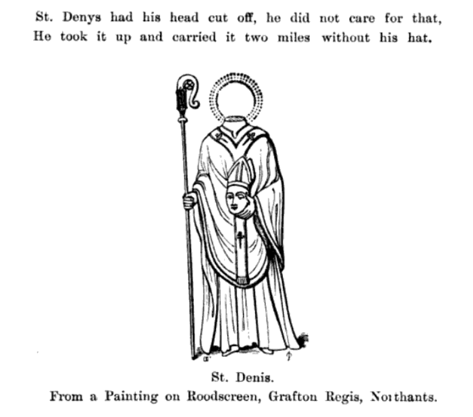

A Compendium of Information and Images Of and Related to Christian Art and Iconography
SAINTS
×
×
John the Baptist
John the Baptist is venerated for his role in preceding the Gospels as he baptized Jesus Christ and foretold of his coming. On the left above John's depiction is Greek lettering reading "St. John the Precursor". Here John's head is honored with a nimbus and he is holding his own head, as John was beheaded for his heresy. John is clad in camel's skin with angel's wings attached to his back.
On the right, John is depicted with a nimbus and cradling the Lamb of God in his hands.
×
×
John the Evangelist
John the Evangelist is the name traditionally given to the supposed author of the Gospel of John. The text of the Gospel of John refers to an otherwise unnamed "disciple whom Jesus loved", who "bore witness to and wrote" the Gospel's message. Here to the left John the Evangelist is depicted with a nimbus circling his head and two sunflowers crossed above. The sunflowers are emblematic of the sun's power and life-giving force. To the right John the Evangelist is depicted with the head of an eagle, an oft associated animal symbol of John.
×
Saint Gregory the Great
Pope Gregory I, also known as Saint Gregory the Great, was the bishop of Rome in the 6th century. Gregory the Great iniated the first recorded large-scale mission from Rome. Throughout the Middle Ages he was known as "the Father of Christian Worship". Note the dove on Gregory's right shoulder which also bears a nimbus as befitting the Holy Spirit.
×
Saint Gregory IV
Gregory IV was a native of Rome and the cardinal priest of St. Mark's when he was elected pope in the 9th century. In addition to his involvment in the Carolingian quarrels, he was canonized for his committment to the architectural development of the church in Rome, helping to rebuild St. Mark's Basilica and the atrium of St. Peter's Basilica. Attributing his role in rebuilding Rome, he is often presented holding church buildings in his hands.

×
×
Saint Denis of Paris
Born and raised in Italy in the 3rd century AD, Denis was sent as a missionary to Gaul by Pope St. Clement. Denis made the base of his missionary activity in what is today Paris and for this reason is now known as the first bishop of Paris and the Apostle of France. Denis and his priestly companions were arrested and imprisoned for their missionary work. Denis was beheaded and it is said that afterwards he picked his mitred head up and walked for several miles, preaching a sermon along the way. The site where Denis stopped preaching and died was marked by a shrine that eventually developed into the Basilica of Saint-Denis, which became the burial place for the monarchs of France.
×
Saint Lucy
Lucia was born in Syracuse in Sicily in the 3rd century AD. During the era of Diocletian persecution, a disgruntled suitor accused Lucy of being a Christian and she was subsequently executed and made a martyr. Divergent stories tell of her arrest and death including one version in which the guards came to take her away and found her unmovable, not even a team of oxen could draw her from her position. Another version find Lucy being killed by a sword to her throat. One of the more enduring stories and images involves Lucy undergoing torture and the gouging of her eyes, thus providing the imagery of Saint Lucy holding in her hands a plate with a pair of open eyes.
×
×
×
Saint Sebastian
Similar to many of the early Christian martyrs, Sebastian lived and died during the 3rd century AD under the reign of the Roman emperor Diocletian. Labeled as a Christian and targeted for his role in converting others to Christianity, Sebastian was arrested, tied to a post, and shot with arrows, creating the lasting image that is seen today of Sebastian's bare body riddled with arrows. Sebastian's legend states that he did not die from the barrage of arrows and was nursed back to healt by Saint Irene of Rome, only to be caught and clubbed to death.
×
×
Saint Teresa of Avila
A Carmelite nun, Teresa lived and died in Spaing during the 16th century. One of the church's most revered representatives of the Mystic tradition, Teresa of Avila's writings were preoccupied with the ascent of the soul to God, in which she identified four stages: Devotion of the Heart, Devotion of Peace, Devotion of Union, and the Devotion of Ecstasy. Her association with the Mystical tradtion also included a focus on prayer and she commonly employed the metaphor of watering one's garden. Her writing, The Interior Castle especially, remains beloved today and influences the image of Teresa holding a castle in her hands in iconic respresenations.
×
Mary Magdalene
"Apostle to the Apostles" Mary Magdalene travelled alongside Christ, following his teachings. Mary bore witness to Christ's crucifixion, was present at his burial, and, excluding the Virgin Mary, is mentioned more than any other woman in the Gospels. Magdalene was also the first witness to Christ's empty tomb and his resurrection.